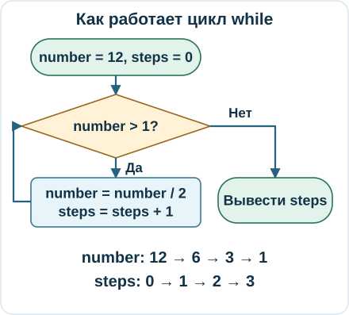
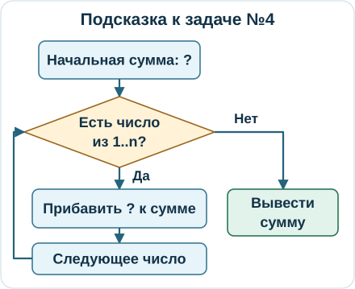

Условия if и when, диапазоны и циклы
В задачах №1–2 для любых допустимых данных выполнялись одни и те же вычисления. Теперь программа сможет выбрать результат по условию и повторить вычисление для нескольких чисел. Запускайте каждый пример отдельно в OpenIDE или в режиме JVM в Kotlin Playground.
Проверка условий через if
Определим знак целого числа. Сравнения >, <, >=, <= и == дают true или false. Знак = присваивает значение, а == сравнивает значения. Оператор && означает «и», оператор || означает «или». Например, условие n >= 10 && n <= 99 истинно для положительных двузначных целых чисел.
fun main() {
val n = -3
val sign = if (n > 0) {
"Положительное число"
} else if (n < 0) {
"Отрицательное число"
} else {
"Ноль"
}
println(sign)
}
При n = -3 условие n > 0 ложно, затем программа проверяет n < 0 и получает строку Отрицательное число. В sign записывается результат одной ветки. При n = 0 оба сравнения ложны и срабатывает else. Проверьте также n = 1 и n = -1, чтобы охватить обе стороны границы.
Выбор операции через when
Пусть символ s означает «возвести число в квадрат», а d означает «удвоить число». Один символ Kotlin записывает в одинарных кавычках. when (operation) сравнивает значение с ветками и выполняет подходящую. else обрабатывает остальные значения.
fun main() {
val n = 4
val operation = 's'
when (operation) {
's' -> println(n * n)
'd' -> println(2 * n)
else -> println("Неизвестная операция")
}
}
При operation = 's' программа выводит 16. С 'd' она выведет 8, а с '?' — сообщение Неизвестная операция. При 's' выполняется только строка с квадратом.
Диапазоны и цикл for
В 1..3 входят числа 1, 2 и 3. В 0 until 3 входят 0, 1 и 2. Запись n in 10..99 проверяет принадлежность диапазону и равносильна условию n >= 10 && n <= 99. Запись n !in 10..99 проверяет, что число лежит вне диапазона.
Цикл for перебирает элементы диапазона по порядку. Напечатаем квадраты целых чисел от 1 до заданной границы включительно.
fun main() {
val limit = 3
for (number in 1..limit) {
println(number * number)
}
}
Цикл последовательно подставляет в number значения 1, 2 и 3. Он выводит 1, 4 и 9 на отдельных строках. При limit = 0 диапазон 1..0 пуст, поэтому тело цикла пропускается.
Цикл while и условие остановки
Возьмём положительное целое число. Пока оно больше 1, делим его на 2 с отбрасыванием дробной части. Посчитаем, сколько делений потребуется.

fun main() {
var number = 12
var steps = 0
while (number > 1) {
number = number / 2
steps += 1
}
println(steps)
}
while проверяет условие перед каждым повтором. Значения number идут в порядке 12, 6, 3, 1. При 1 условие ложно, поэтому программа выводит 3. Если начальное число равно 1, цикл сразу пропускается и программа выводит 0. Строка steps += 1 прибавляет единицу к счётчику. Переменная number меняется на каждом шаге и приближается к значению, при котором цикл остановится.
Самостоятельные задачи 3 и 4
В начале каждой программы задайте данные в коде через val. Для нового запуска меняйте эти значения и оставляйте алгоритм прежним. У каждой задачи свой файл .kt с одной функцией main.
Задача №3. Существует ли треугольник
Задайте в Triangle.kt три целых числа a, b и c от −1000 до 1000. Они обозначают предполагаемые длины сторон.
- Если хотя бы одно число неположительное, выведите
Длины должны быть положительными. - Для положительных длин проверьте, что сумма любых двух строго больше третьей. Если выполнены все три сравнения, выведите
Треугольник существует. - Для остальных положительных длин выведите
Треугольник не существует.
Задача №4. Сумма целых чисел от 1 до N
Задайте в RangeSum.kt целое число n от 0 до 1000. Через цикл for найдите сумму чисел от 1 до n включительно и выведите её одной строкой после цикла. Для n = 0 сумма пустого диапазона равна нулю. Подумайте, с какого значения начать переменную, в которой накапливается сумма, и что добавлять к ней на каждом повторе.
Блок-схема-подсказка к задаче №4

Самопроверка
Перед каждым запуском вычислите ожидаемый результат вручную и сравните его с выводом.
| Задача | Данные для запусков | Что проверить |
|---|---|---|
| №3 | (3, 4, 5), (2, 3, 5), (3, 8, 4), (8, 3, 4), (0, 4, 5) |
Все три неравенства, равенство на границе, перестановку длин и ветку для неположительной длины. |
| №4 | 5, 1, 0 |
Полный перебор, один повтор и пустой диапазон. |
Сохраните программы и отметьте, какие задачи готовы к общей проверке в конце практики. Если обе среды запуска недоступны, запишите алгоритм и ожидаемые результаты с пометкой «без запуска».